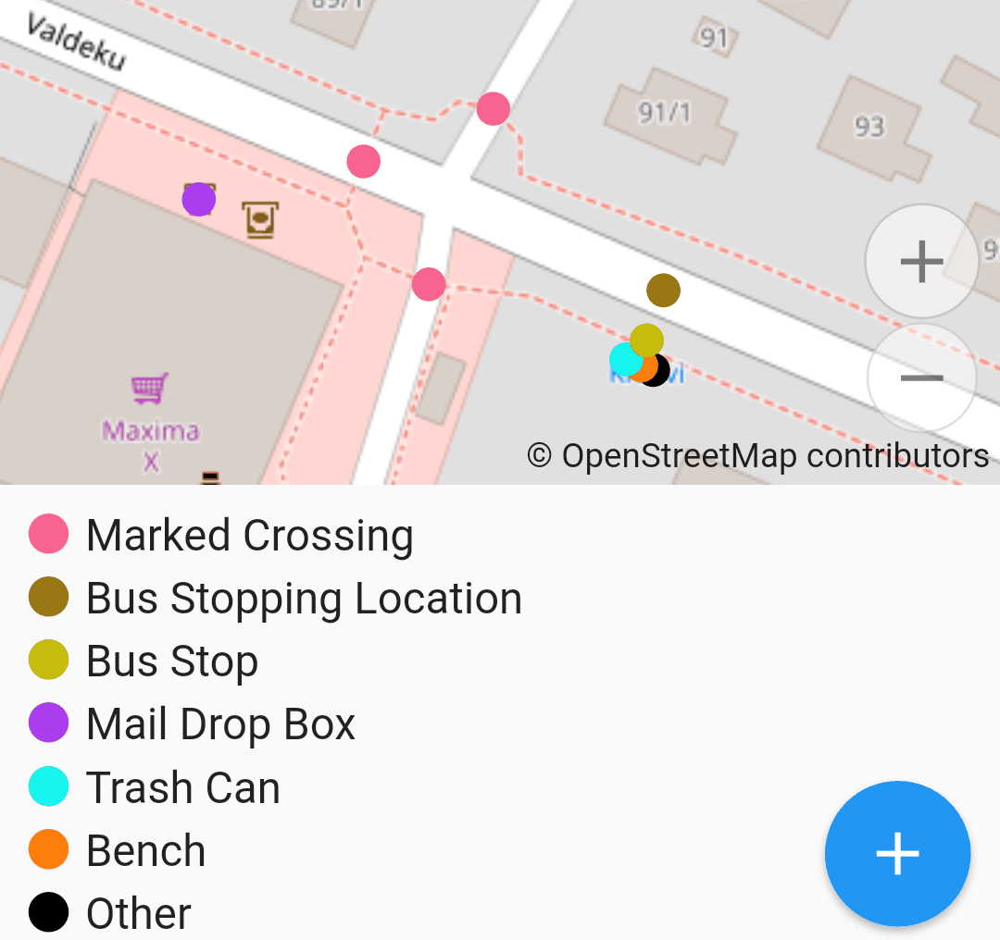
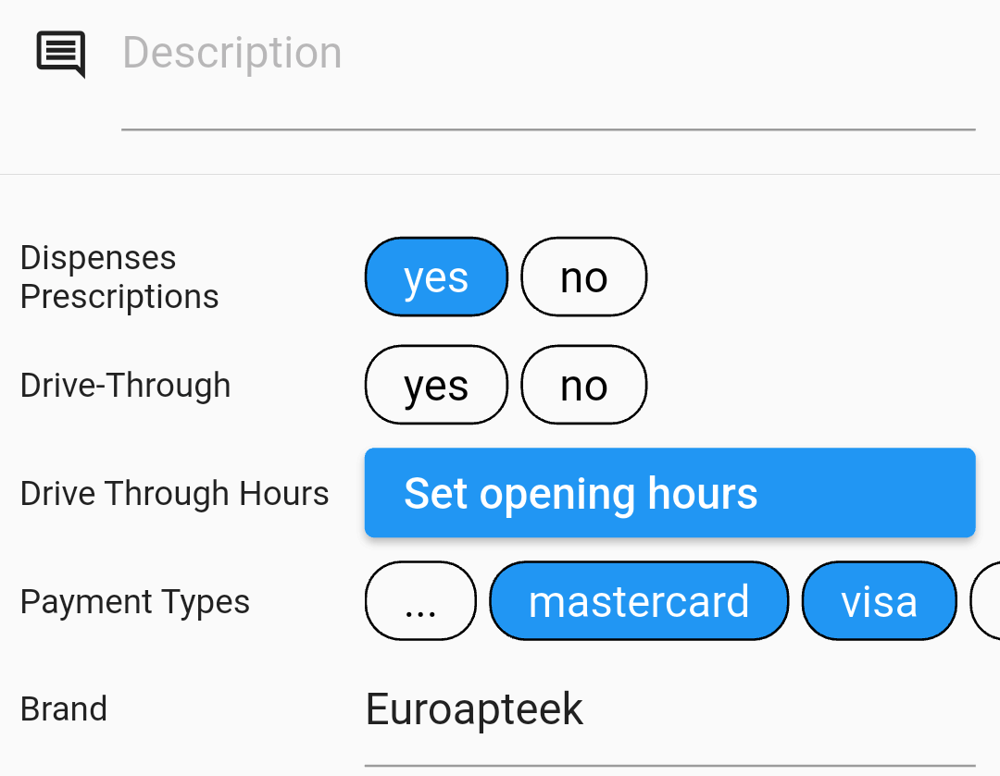

Developing Presets
TL;DR:
- Presets: repository, schema, mind the
fields. - Fields: repository, schema, consider
strings/optionsfor combos. - Brand Suggestions: repository and wiki.
- Local: see presets in plugins.
Global Presets
The editor uses presets from iD. If you find something missing: an object type, a field in an editing form — you should take it upstream, to that repository, preferably in form of a pull request. This does sound complex, and this page would help you through it.
You would benefit from keeping the preset schema at hand: it documents everything that goes into preset and field definitions.
Presets
A preset is a named set of fixed and editable tags. For example, the
amenity/bench preset
defines the fixed amenity=bench tag — that's how an object is deemed to be a bench.
Every Door uses those fixed tags to split objects by types in the micromapping mode,
and of course to get a list of fields for the editor.

Lists fields and moreFields define editable tags, split by importance (which usually
depends on usage frequency). Those reference fields by names. It is important
to have as few fields in the first list as possible — but also every field that can be
quickly assessed and provides useful, practical information.
Finally, a preset needs to be searchable. When a mapper sees a fish shop, they would
most likely search for "fish", and it doesn't matter that the OSM tag is shop=seafood.
That's why the preset
includes an alias starting with "fish": search engines look at name, aliases, and terms
properties, including their translations.
That's basically it. Try looking for the preset based on its tags, main and additional. If you find it there, then maybe consider adding search terms so that other people won't have to do the same. If not — write the JSON file according to the schema and using other files for reference, and submit a pull request.
You will see the update in Every Door after the request is merged, and a new editor release is published. In the meantime, you could also make a local preset for yourself.
Fields
Every input field and button you see on the object editing page is defined in some field, referenced from a preset. Usually, barring very few special cases hard-coded in Every Door, a field edits a single key value. Like for this backrest=* field, usually all you need for a field is that key, a label, and a type.

If there is something wrong with a field, you can find it by locating the preset it is in,
reading the fields or moreFields list, and locating the field JSON source in the
repository.
Often you would do this to add
translatable options
to a combo field.
Before adding a new field that a preset requires, confirm it is indeed absent. Not all
fields are listed: sometimes people just forget that e.g. capacity=* fits not only
bicycle racks, but also benches. Note that there can be multiple fields for a single
key, when the context differs. For capacity, there are three, technically differing
only by labels:
parking spaces,
countable capacity,
and volume.
As mentioned above, a new field might only need three properties:
{
"key": "tactile_paving",
"type": "check",
"label": "Tactile Paving"
}
Read the schema definition
to learn where to put the file, and how to choose the type. It's the single most
important property with ~30 possible values, defining how the field looks and behaves.
Often you might want to add restrictions and details with other properties, e.g.
placeholder for text fields, minValue for numbers, strings for combo fields.
Those are also listed in the schema.
Note that by default, only label and placeholder are translatable.
For combo and checkbox fields you might want to make options translatable
too by listing the most common ones in the
strings property.
As with presets, Every Door will see your change only after it's been merged and included in the published build. And you can also define a field in your own plugin.
Name Suggestion Index
When you map a KFC or a Shell fuel station, you would add many tags that are common to other KFC or Shell objects not only in your country, but in the whole world. Like the name, brand, wikipedia and wikidata links, cuisine, fuel types etc. And you might make typos in the process. To avoid this redundant work, the Name Suggestion Index was created to catalogue tagging for common franchises and brands, both local and global.
At the base level, an NSI entry is just a name and a list of tags to put on an object.
And maybe some terms to make searching easier. In Every Door, you search for a brand,
get a gray tile with it, tap it, and get an editor pane with all tags pre-filled.
Entries also include an area where the brand is active, "001" meaning the entire world.
It commonly looks like this:
{
"displayName": "Frasers",
"id": "frasers-3fbcc0",
"locationSet": {"include": ["na", "za"]},
"tags": {
"brand": "Frasers",
"brand:wikidata": "Q116740926",
"name": "Frasers",
"shop": "bag"
}
}
To contribute to NSI, you must know the project structure and the meaning of properties. They are documented on the wiki: see the Overview, Category Files for the schema, and a guide on Adding missing entities.
Locally, you can have an NSI preset in a plugin. For that, simply omit the fields list.
Note that NSI presets do not participate in type detection, so you will see "Post Box"
in the micromapping legend for any post box, even a branded one that has an NSI entry for it.
Personal Presets
Some presets are not meant to go into iD or other public instances: they are too local, too focused on the task. For example, when you have a town-wide project to map the state of waste baskets, adding many auxillary tags. Or a proposal is not yet accepted, so there is low chance of your pull request being merged to the global tagging.
You can have personal presets in Every Door, and even share them with other people. That would be a part of a plugin. Read on adding presets to plugins.